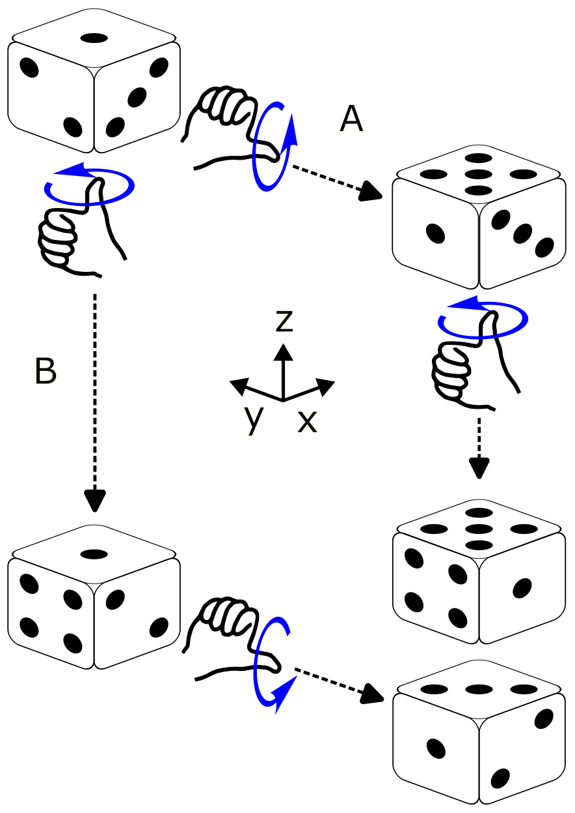
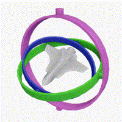
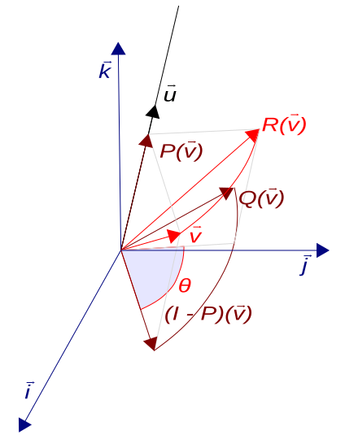
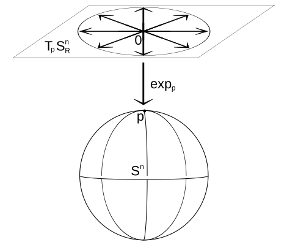

ROB 498 / 599 · Fall 2026 · Companion to L03
A pose is not a vector
The first half of L03 went quickly through groups, manifolds, the tangent space and uncertainty on poses. This tutorial covers the same ground slowly. It works every example in numbers, draws the ideas, and gives you three figures you can move with sliders. The material is the same as the slides, explained a second way.
How to read this
Eleven short steps, in order
Each step uses the one before it. If you are short of time, do not skip Step 5. It puts every idea from the lecture on a circle, where you can see all of it at once, and the 3D steps after it repeat that picture with bigger matrices.
Each step ends with a few questions. Answer them before you open them. Where an outside tutorial explains the same point well, a Read elsewhere box names the exact figure, section or video. The slide titles each step backs up are listed under its heading.
The figures use colour the same way every time:
Straight answers
The questions from class, answered short
Each answer points to the step that explains it properly.
Is SO(3) a group or a manifold?
Both, and they are two separate facts. Group is about the rules for combining rotations: compose, undo, do nothing. Manifold is about the shape of the set: curved, but flat when you zoom in. A set with both properties, where the two fit together smoothly, is called a Lie group. Steps 2–4
What exactly is “the manifold”?
The set of all $3\times3$ matrices with $\mathbf{R}^\top\mathbf{R}=\mathbf{I}$ and $\det\mathbf{R}=+1$, seen as a surface inside the 9-dimensional space of all $3\times3$ matrices. That surface is 3-dimensional, in the same way the circle $x^2+y^2=1$ is a 1-dimensional curve in the plane. Step 4
What is the tangent space? Is it $\mathfrak{so}(3)$?
The tangent space at a point is the flat space of all velocities you could have while passing through that point. The one at the identity has its own name, $\mathfrak{so}(3)$: the skew-symmetric matrices, which are 3-vectors $\boldsymbol\omega$ in matrix form. The tangent spaces at other points are copies of it. Step 6
Why does an exponential show up?
Spinning at a constant angular velocity is a linear differential equation, and the solution of a linear ODE is an exponential. $\exp$ takes a velocity and returns where you are after one second of it. Step 7
Why not add, then re-normalise?
Projecting back onto the rotations does give you a valid rotation, but not the one the correction described, and how far off it is depends on how far you strayed. Composing with $\mathrm{Exp}$ lands exactly where the correction says. Step 5
What does “uncertainty lives in the tangent space” mean?
Write the true pose as your estimate composed with a small unknown twist, $\mathbf{T} = \bar{\mathbf{T}}\,\mathrm{Exp}(\boldsymbol\xi)$, and put an ordinary Gaussian on $\boldsymbol\xi$. The covariance is $6\times6$ on $\boldsymbol\xi$, never on the entries of $\mathbf{T}$. Step 9
Step 1 · 8 min
The problem: every tool you own adds
Look at the update step of every estimator you have used:
Each one adds vectors and scales them. A robot's orientation looks like it should work the same way, since it has three degrees of freedom. It does not work, and there are three separate reasons.
Reason 1: the order of rotations matters
Take a book lying flat. Turn it 90° about the world $x$ axis, then 90° about the world $y$ axis. Start again, and do the same two turns in the other order. The book ends up in two different positions:

{kind=link}
Reason 2: the sum of two rotations is not a rotation
In 2D, add the rotation by 0° to the rotation by 90°:
The result rotates by 45°, but it also stretches everything by $\sqrt2$, so it is not a rotation. The lecture did the 3D version: the average of the 0° and 180° turns about $z$ has determinant 0. It flattens space onto a line.
Reason 3: every three-number description breaks somewhere
Roll, pitch and yaw lose a degree of freedom at pitch $\pm90^\circ$, where roll and yaw turn about the same axis. This is gimbal lock. Choosing different angles does not fix it. Step 4 shows why with a globe: any single flat coordinate system laid over a shape that closes on itself has a seam somewhere.

{kind=link}
So we need three things, and the rest of this tutorial supplies them:
- Rules for what you may do with rotations. That is the group.
- A place where adding and scaling are legal again. That is the tangent space.
- A way to move between the two. That is $\exp$ and $\mathrm{Log}$.
- Wikipedia, Gimbal lock, where the animation above comes from. It also works through the loss of a degree of freedom with Euler-angle matrices.
- Lynch & Park, Modern Robotics, Fig. 3.12 (§3.2.1): reason 1, drawn for rotations about different axes.
Try it
Rotate the book about $z$ by 90°, then again about $z$ by 30°. Does the order matter now?
No. Rotations about the same axis commute: both orders give 120° about $z$. This is why 2D rotations (Step 5) are so much easier. There is only one axis.
Compute $\det$ of $\tfrac12\big(\mathbf{R}(0^\circ)+\mathbf{R}(90^\circ)\big)$ in 2D. What does the average do to a unit square?
$\tfrac12\begin{bmatrix}1&-1\\1&1\end{bmatrix}$ has determinant $\tfrac12$. It rotates by 45°, shrinks lengths by $1/\sqrt2$ and halves areas. That is a valid linear map, but not a rotation.
Step 2 · 10 min
Groups: rules for combining things
A group is a set together with one way of combining two of its members, obeying four rules. The rules are not arbitrary. Each one is something you rely on every time you chain transforms in code:
| Rule | For rotations | What it buys you in code |
|---|---|---|
| Closure | $\mathbf{R}_1\mathbf{R}_2$ is a rotation | Composing two poses always gives a pose. Adding them does not, as Step 1 showed. |
| Associativity | $(\mathbf{R}_1\mathbf{R}_2)\mathbf{R}_3 = \mathbf{R}_1(\mathbf{R}_2\mathbf{R}_3)$ | $\mathbf{T}_{wc} = \mathbf{T}_{wb}\mathbf{T}_{bl}\mathbf{T}_{lc}$ needs no brackets, so a transform tree can multiply in any grouping. |
| Identity | $\mathbf{I}$ | “No motion”. The zero correction maps to it. |
| Inverse | $\mathbf{R}^{-1} = \mathbf{R}^\top$ | “Undo”, in closed form. So never call np.linalg.inv on a rotation or a pose: the closed form is exact and cheaper. |
Two things are not on the list. Commutativity: $ab$ need not equal $ba$, and for 3D rotations it usually does not. Adding and scaling: a group has exactly one operation, and for rotations that operation is composition. “Half of $\mathbf{R}$” or “$\mathbf{R}_1+\mathbf{R}_2$” are not group operations.
Example: the four rotations of a square
Take a square with one corner marked and rotate it counter-clockwise by 0°, 90°, 180° or 270°. Each rotation puts the square back on its own outline, so these four are its symmetries. Combine two of them by doing one after the other.
The table lists every combination. Read the row, then the column: the entry is the row rotation followed by the column rotation.
| then → | r0 | r90 | r180 | r270 |
|---|---|---|---|---|
| r0 | r0 | r90 | r180 | r270 |
| r90 | r90 | r180 | r270 | r0 |
| r180 | r180 | r270 | r0 | r90 |
| r270 | r270 | r0 | r90 | r180 |
You can check three of the rules by reading the table. Every entry is one of the four
rotations, so the set is closed. The r0 row repeats the header, so
r0 is the identity. The identity appears exactly once in every row,
highlighted, so every rotation has an inverse: 90° is undone by 270°.
Associativity comes for free, because doing one thing after another is always associative.
Example: all rotations of the plane
Let the angle be anything, not just multiples of 90°. Combining two rotations adds their angles, wrapping at 360°. The identity is 0° and the inverse of $\theta$ is $-\theta$. This group is called $\mathrm{SO}(2)$. Its members also form a circle, and that circle is what leads to manifolds in Step 4.
Two sets that are not groups
- Rotation matrices under addition: closure fails, as Step 1 showed.
- Integers under multiplication: the identity is 1, but 2 has no integer inverse.
- 3Blue1Brown, Group theory, abstraction, and the 196,883-dimensional monster (22 min). It builds groups from the symmetries of shapes, like the square above, and shows two symmetries giving different results in different orders.
- Group Explorer, free in the browser. Pick any small group and it draws the multiplication table and Cayley diagram, so you can check the rules yourself.
Try it
Take all 3D reflections: orthogonal matrices with determinant $-1$. Do they form a group under multiplication?
No. Two reflections multiply to a matrix with determinant $(-1)(-1)=+1$, which is a rotation, so closure fails. The identity has determinant $+1$, so it is not in the set either.
Then why does the definition of SO(3) need $\det\mathbf{R}=+1$?
Without it, $\mathbf{R}^\top\mathbf{R}=\mathbf{I}$ allows rotations and reflections together. That larger set, $\mathrm{O}(3)$, is also a group. The condition $\det=+1$ keeps only the rotations, which form a group by themselves and are the only matrices a physical rigid body can have.
Find two poses that give different results in different orders.
Let $\mathbf{T}_1$ translate 1 m along $x$ and $\mathbf{T}_2$ rotate 90° about $z$. Follow where the origin goes. $\mathbf{T}_1\mathbf{T}_2$ rotates it first, which does not move it, then translates it, so it lands at $(1,0,0)$. $\mathbf{T}_2\mathbf{T}_1$ translates it to $(1,0,0)$ and then rotates that point to $(0,1,0)$.
Step 3 · 8 min
SO(3), concretely: what the nine numbers mean
Read $\mathbf{R}^\top\mathbf{R}=\mathbf{I}$ one column at a time. Entry $(i,j)$ of $\mathbf{R}^\top\mathbf{R}$ is the dot product of column $i$ with column $j$. So the equation says each column has length 1, and any two columns are perpendicular.
The columns also have a physical meaning: column $j$ is where the $j$-th axis ends up. Here is the rotation by 90° about $z$:
Counting degrees of freedom
The matrix has nine entries. Written out, $\mathbf{R}^\top\mathbf{R}=\mathbf{I}$ is six equations, not nine, because the $(i,j)$ and $(j,i)$ entries give the same equation:
The condition $\det\mathbf{R}=+1$ removes no dimensions. It throws out mirror images, such as $\mathrm{diag}(1,1,-1)$, which passes the column test but turns a right hand into a left hand.
Every representation stores the same three degrees of freedom
| Representation | Numbers stored | What it costs you |
|---|---|---|
| Euler angles (roll, pitch, yaw) | 3 | Singular at pitch $\pm90^\circ$, and there are twelve orderings with no agreed default. |
| Axis–angle vector $\boldsymbol\omega$ | 3 | Wraps around: turning $\pi+\epsilon$ one way is the same rotation as turning $\pi-\epsilon$ the other way. |
| Unit quaternion | 4 | One constraint to maintain, and $\mathbf{q}$ and $-\mathbf{q}$ are the same rotation. |
| Rotation matrix | 9 | Six constraints to maintain. |
The group is the same in every row. Only the bookkeeping changes, and every choice pays for its convenience somewhere.
- Modern Robotics §3.2.1, with two short videos: Rotation Matrices, part 1 (3 min) and part 2 (4 min). They cover columns as axes and the three uses of a rotation matrix.
- Ben Eater and 3Blue1Brown, Visualizing quaternions, interactive, if you want to see why $\mathbf{q}$ and $-\mathbf{q}$ are the same rotation (the “double cover” chapter).
Try it
Which of these are in SO(3)? $\mathbf{A}=\begin{bmatrix}1&0&0\\0&0&1\\0&1&0\end{bmatrix}$, $\mathbf{B}=\begin{bmatrix}0.8&-0.6&0\\0.6&0.8&0\\0&0&1\end{bmatrix}$, $\mathbf{C}=\begin{bmatrix}1&0.1&0\\0&1&0\\0&0&1\end{bmatrix}$
Only $\mathbf{B}$, which is a rotation of $36.9^\circ$ about $z$ because $\cos\theta=0.8$. $\mathbf{A}$ has orthonormal columns but swaps $y$ and $z$, so $\det\mathbf{A}=-1$: it is a mirror. $\mathbf{C}$ has $\det=1$ but its first two columns are not perpendicular, so it is a shear.
A rotation matrix's third column is $(0,0,-1)$. What happened to the $z$ axis?
It flipped to point straight down. The object is upside down. For example, $\mathbf{R}_x(180^\circ)$ does this.
Step 4 · 10 min
Manifolds: curved overall, flat up close
A manifold is a set that looks like ordinary flat $\mathbb{R}^n$ if you zoom in close enough around any of its points. The number $n$ is its dimension. The standard picture is the Earth. A street map of your town is flat and works perfectly. A map of the whole planet cannot be flat without stretching or tearing somewhere.
Three things carry over from the globe to rotations.
- Dimension counts the directions you can move in, not the numbers you store. A point on the sphere is stored as $(x,y,z)$, but you can only move north–south and east–west, so the sphere is 2-dimensional. A rotation is stored as nine numbers and has three directions to move in.
- The flat map at a point is the tangent space. Distances, directions, averages and derivatives all work on the flat map, and you can trust them near the point where it touches. Calculus on a manifold is calculus on these maps.
- Every single global coordinate system has a bad spot. At the North Pole every longitude names the same point, and one small step can change longitude by 180°. Euler angles fail the same way at pitch $\pm90^\circ$. No choice of three angles avoids it, because SO(3), like the sphere, closes back on itself, and a flat grid laid over it must have a seam.
From the circle up to poses
| Manifold | Stored as a point in | Dimension | Also a group? |
|---|---|---|---|
| Circle, $x^2+y^2=1$ | $\mathbb{R}^2$ | 1 | Yes: SO(2), rotations of the plane |
| Sphere, $x^2+y^2+z^2=1$ | $\mathbb{R}^3$ | 2 | No. There is no way to combine two points on a sphere that obeys the four rules |
| Unit quaternions | $\mathbb{R}^4$ | 3 | Yes |
| SO(3) | $\mathbb{R}^{3\times3}$, nine numbers | 3 | Yes |
| SE(3), poses | $\mathbb{R}^{4\times4}$, twelve free entries | 6 | Yes |
A manifold that is also a group, where the operation is smooth, is a Lie group. SO(3) and SE(3) are Lie groups. So “SO(3) is a group” and “SO(3) is a manifold” are both true, and they describe different things.
“Drifting off the manifold”
Think of the constraints as carving out a surface. $x^2+y^2=1$ picks a circle out of the plane, and $\mathbf{R}^\top\mathbf{R}=\mathbf{I}$ picks a 3-dimensional surface out of the space of $3\times3$ matrices. A matrix that no longer satisfies the constraint is a point off that surface. Multiplying rotations in floating point creeps off it very slowly. Adding a correction jumps off it immediately:
import numpy as np
from scipy.spatial.transform import Rotation as Rot
W = np.array([[0., -1, 0], [1, 0, 0], [0, 0, 0]]) # spin about z at 1 rad/s
dt = 0.01
R_add = np.eye(3)
R_cmp = np.eye(3)
for _ in range(1000): # ten seconds
R_add = R_add + R_add @ W * dt # "add a small correction"
R_cmp = R_cmp @ Rot.from_rotvec([0, 0, dt]).as_matrix()
print(np.linalg.det(R_add)) # 1.105 ten percent too big, and growing
print(np.linalg.det(R_cmp)) # 1.000Each added step stretches the matrix by a factor of $\sqrt{1+\mathrm{d}t^2}$. That is tiny per step, but it never averages out. Step 5 lets you watch it happen.
- Solà, Deray & Atchuthan, A micro Lie theory for state estimation in robotics, §II-A and Figs. 1–2: a sphere with its tangent plane, and a manifold with a side-cut through it. The paper covers Steps 4 to 11 of this tutorial, and the later boxes point to its figures.
- Modern Robotics Fig. 3.13 (§3.2.3) draws all of SO(3) at once as a solid ball of radius $\pi$ whose opposite surface points are glued together. Look at it when the idea of SO(3) “closing back on itself” feels too abstract.
- GTSAM blog, M. Mattamala, Reducing the uncertainty about the uncertainties, part 2: frames and manifolds.
Try it
What is the dimension of (a) the set of unit vectors in $\mathbb{R}^3$, (b) planar poses SE(2), (c) the directions a camera's optical axis can point?
(a) 2, since it is the sphere. (b) 3: $x$, $y$ and heading. (c) 2, since it is the sphere again. Adding roll about the optical axis gives 3, which is all of SO(3).
Where exactly is the “seam” for roll–pitch–yaw, and what is its analogue on the globe?
At pitch $\pm90^\circ$, where only roll minus yaw (or roll plus yaw) can be determined, not each one separately. On the globe it is the poles, where latitude is fine but longitude is undefined.
Step 5 · 15 min
The whole lecture on a circle
SO(3) is a curved 3-dimensional surface inside a 9-dimensional space, and nobody can draw that. SO(2), the rotations of the plane, has every one of the same ideas and fits on a page.
The group, and the manifold
A 2D rotation and its first column:
So every rotation is a point on the circle, and the circle is the manifold. Here are the group rules on it:
- Compose: $\mathbf{R}(a)\mathbf{R}(b)=\mathbf{R}(a+b)$. Angles add, and the result wraps around the circle.
- Identity: $\mathbf{R}(0)=\mathbf{I}$, the point $(1,0)$.
- Inverse: $\mathbf{R}(\theta)^{-1}=\mathbf{R}(-\theta)=\mathbf{R}(\theta)^\top$, the mirror-image point below the axis.
The tangent space, and the hat map
Move along the circle through the identity and ask for your velocity. Differentiate $\mathbf{R}(\theta)$ at $\theta=0$:
Every velocity at the identity is a multiple of $\mathbf{J}$. These are the skew-symmetric $2\times2$ matrices, and each one is described by a single number $\omega$. Geometrically they form the vertical line touching the circle at $(1,0)$. The hat map is $\omega^\wedge = \omega\mathbf{J}$, turning the number into the matrix. On this line, adding and scaling are fine.
exp wraps the line around the circle
Put $\theta\mathbf{J}$ into the power series for the exponential. Since $\mathbf{J}^2=-\mathbf{I}$, the powers cycle through $\mathbf{I},\mathbf{J},-\mathbf{I},-\mathbf{J}$. Group the terms:
So $\exp$ takes a distance $\theta$ along the tangent line and wraps it onto the circle as an arc of the same length. $\mathrm{Log}$ unwraps it: $\mathrm{Log}(\mathbf{R}) = \mathrm{atan2}(R_{21}, R_{11})$, which always returns an angle in $(-\pi,\pi]$.
Now try it. Pick an estimate $\bar{\mathbf{R}}$ and a correction $\tau$. The figure applies the correction in two ways: by adding $\tau$ times the tangent direction to the matrix, and by composing with $\mathrm{Exp}(\tau)$.
Plus and minus
Every estimator needs two things: apply a correction and measure a difference. On a group they become:
Headings make the difference easy to see. Take 10° minus 350°. As plain numbers it is $-340^\circ$. On the circle it is $\mathrm{Log}\big(\mathbf{R}(-350^\circ)\mathbf{R}(10^\circ)\big) = \mathrm{Log}\big(\mathbf{R}(-340^\circ)\big) = +20^\circ$, because $\mathrm{Log}$ returns the short way round. A compass heading filter that forgets this turns the robot the long way.
Averaging, the right way
Three heading measurements: 350°, 10° and 20°. Averaged as numbers they give $(350+10+20)/3 = 126.7^\circ$, which points almost backwards. The correct method uses the tangent-space idea:
- Pick a starting guess, say $\bar{\mathbf{R}} = 350^\circ$.
- Unwrap each measurement onto the tangent line there: $\mathbf{R}_i \ominus \bar{\mathbf{R}} = 0^\circ,\ 20^\circ,\ 30^\circ$.
- Average on the line, where adding is legal: $16.7^\circ$.
- Wrap back onto the circle: $\bar{\mathbf{R}} \leftarrow \bar{\mathbf{R}} \oplus 16.7^\circ = 6.7^\circ$.
- Repeat. The unwrapped values are now $-16.7^\circ, 3.3^\circ, 13.3^\circ$, which average to 0, so it has converged.
import numpy as np
def R2(a): return np.array([[np.cos(a), -np.sin(a)], [np.sin(a), np.cos(a)]])
def Log2(R): return np.arctan2(R[1, 0], R[0, 0])
meas = [R2(np.radians(d)) for d in (350, 10, 20)]
R = meas[0]
for _ in range(10):
tau = np.mean([Log2(R.T @ Ri) for Ri in meas]) # unwrap, average
R = R @ R2(tau) # wrap back: R ⊕ tau
print(np.degrees(Log2(R))) # 6.67Keep this loop in mind. Step 11 shows that pose-graph optimisation, PnP and ICP all have the same structure: unwrap onto the tangent space, solve there, wrap back.
- Solà et al., micro Lie theory, Example 1 and Fig. 3 do this exact example with unit complex numbers, $z=\cos\theta+i\sin\theta$. Fig. 5 shows why the velocity looks the same from every point on the circle.
- Joan Solà, Lie theory for the roboticist (37 min): the first author presenting the same material as a talk.
Try it
Two headings, 170° and $-170^\circ$. What is their difference, and what is their mean?
$(-170^\circ)\ominus 170^\circ = \mathrm{Log}\big(\mathbf{R}(-340^\circ)\big) = +20^\circ$. Starting at 170°, the unwrapped values are $0^\circ$ and $20^\circ$, which average to $10^\circ$, and $170^\circ\oplus10^\circ = 180^\circ$. The average of the numbers is $0^\circ$, which points the opposite way.
In the figure, set $\tau=0.5$. Why is the added point's distance from the centre $\sqrt{1.25}$?
The tangent direction is perpendicular to the radius and has length 1. You move $\tau$ along it from a point at distance 1, so by Pythagoras you reach distance $\sqrt{1+\tau^2}$. The determinant is the square of that, $1+\tau^2$.
Step 6 · 8 min
The tangent space in 3D: $\mathfrak{so}(3)$ and the hat map
Repeat Step 5's derivative in 3D. Let $\mathbf{R}(t)$ be any smooth path of rotations through the identity, so $\mathbf{R}(0)=\mathbf{I}$. The constraint holds at every instant, so its derivative is zero:
So the velocities at the identity are exactly the skew-symmetric matrices. A skew-symmetric $3\times3$ matrix has zeros on the diagonal, and the lower triangle is minus the upper, which leaves three free numbers. The hat map packs them in and the vee map takes them out:
Check the last identity on the first row: $-\omega_3x_2+\omega_2x_3$ is the first component of $\boldsymbol\omega\times\mathbf{x}$. So $\boldsymbol\omega$ is an ordinary angular velocity, and $\boldsymbol\omega^\wedge$ is the matrix that gives the velocity of every point of a body spinning at that rate:
Tangent spaces at other points
At a rotation $\bar{\mathbf{R}}$ that is not the identity, the velocities are $\bar{\mathbf{R}}\boldsymbol\omega^\wedge$. Differentiating $\bar{\mathbf{R}}\exp(t\boldsymbol\omega^\wedge)$ at $t=0$ gives that. It is the same three-number space carried over to $\bar{\mathbf{R}}$ by the group, which is why only the one at the identity gets a name. In this course's convention, corrections multiply on the right, $\mathbf{R} = \bar{\mathbf{R}}\,\mathrm{Exp}(\boldsymbol\omega)$, so $\boldsymbol\omega$ is expressed in the body's own frame.
- Solà et al. §II-C and Example 3, which derive $\mathfrak{so}(3)$ the same way. Fig. 6 puts hat, vee, exp, log, Exp and Log on one diagram. Keep it open while you work through Steps 6 to 8.
- Modern Robotics §3.2.2, video Angular Velocities (3.5 min).
Try it
A body spins with $\boldsymbol\omega=(0,0,2)$ rad/s. What is the velocity of the point $(0,3,0)$?
$\boldsymbol\omega\times\mathbf{x} = (0\cdot0-2\cdot3,\ 2\cdot0-0\cdot0,\ 0) = (-6,0,0)$ m/s. A point on the $+y$ axis spinning counter-clockwise about $z$ heads towards $-x$ at $2\times3=6$ m/s.
Why must the diagonal of a skew-symmetric matrix be zero?
$\mathbf{A}^\top=-\mathbf{A}$ says $A_{ii}=-A_{ii}$ for each diagonal entry, so $A_{ii}=0$. Physically, a rotation never moves a point directly along its own position vector.
Step 7 · 10 min
exp and Log: from velocity to rotation and back
Spin at a constant angular velocity $\boldsymbol\omega$, measured in the body frame. The orientation changes at a rate proportional to itself, which is a linear ODE with constant coefficients. Its solution is an exponential, as it would be for a scalar:
Read $\mathrm{Exp}(\boldsymbol\omega)$ as: spin about the axis $\boldsymbol\omega/\|\boldsymbol\omega\|$ at $\|\boldsymbol\omega\|$ rad/s for one second, then stop. So the vector $\boldsymbol\omega$ is the axis times the angle. Following Solà, capital $\mathrm{Exp}$ and $\mathrm{Log}$ act on the vector directly, and lowercase $\exp$ acts on the matrix, so $\mathrm{Exp}(\boldsymbol\omega) = \exp(\boldsymbol\omega^\wedge)$. Summing the series the way Step 5 did gives Rodrigues' formula, with $\theta=\|\boldsymbol\omega\|$ and $\mathbf{K}=(\boldsymbol\omega/\theta)^\wedge$ for the unit axis:

{kind=link}

{kind=link}
Worked example: Exp
Take $\boldsymbol\omega = (0,0,\pi/2)$, a quarter turn about $z$. Then $\theta=\pi/2$, $\sin\theta=1$ and $1-\cos\theta=1$:
Worked example: Log
Go backwards. The angle comes from the trace and the axis from the antisymmetric part:
That formula divides by $\sin\theta$, which is zero at $\theta=0$ and at $\theta=\pi$. Near 0, use the Taylor form $\boldsymbol\omega^\wedge\approx\tfrac12(\mathbf{R}-\mathbf{R}^\top)$. Near $\pi$ it is worse, because $\mathbf{R}-\mathbf{R}^\top$ itself goes to zero: for $\mathbf{R}_x(180^\circ)=\mathrm{diag}(1,-1,-1)$ it is exactly zero, and the axis has to come from the symmetric part instead. At $\theta=\pi$ Rodrigues' formula gives $\mathbf{R}=2\mathbf{a}\mathbf{a}^\top-\mathbf{I}$ for the unit axis $\mathbf{a}$, so $\tfrac12(\mathbf{R}+\mathbf{I})=\mathbf{a}\mathbf{a}^\top$. Take the column with the largest diagonal entry, normalise it to get $\mathbf{a}$, and fix its sign with whatever is left of $\mathbf{R}-\mathbf{R}^\top$. The reference code handles both cases.
Two facts to carry away
- For small angles, $\mathrm{Exp}(\boldsymbol\omega) \approx \mathbf{I} + \boldsymbol\omega^\wedge$. That is “adding a correction”. It is correct to first order, and Step 5 showed what the second-order error does over many steps. Point-to-plane ICP linearises this way to build its Jacobian, then applies the step it solves for by composing.
- The angle between two rotations is $\|\mathrm{Log}(\mathbf{R}_1^\top\mathbf{R}_2)\| = \|\mathbf{R}_2\ominus\mathbf{R}_1\|$. That is what a rotation error is. From the trace it is $\arccos\big((\operatorname{tr}(\mathbf{R}_1^\top\mathbf{R}_2)-1)/2\big)$; clip the argument to $[-1,1]$ first, because round-off can push it just outside.
from scipy.spatial.transform import Rotation as Rot
import numpy as np
R = Rot.from_rotvec([0, 0, np.pi/2]).as_matrix() # Exp
print(np.round(R, 3)) # [[0,-1,0],[1,0,0],[0,0,1]]
print(Rot.from_matrix(R).as_rotvec()) # Log: [0, 0, 1.5708]
R1 = Rot.from_rotvec([0, 0, np.radians(30)]).as_matrix()
R2 = Rot.from_rotvec([0, 0, np.radians(50)]).as_matrix()
print(np.degrees(np.linalg.norm(Rot.from_matrix(R1.T @ R2).as_rotvec()))) # 20.0- Modern Robotics §3.2.3 and Fig. 3.11, which derives exp from a point spinning about an axis. Videos: Exponential Coordinates of Rotation, part 1 (2 min) and part 2 (4 min).
- Solà et al. §II-D and Example 4 give the same ODE argument, written for a general Lie group.
- SciPy
Rotation:from_rotvecis Exp andas_rotvecis Log. Its quaternions are scalar-last, like the TUM files.
Try it
Work out $\mathrm{Exp}\big((\pi,0,0)\big)$ with Rodrigues' formula. Then say why $\mathrm{Log}$ of the result is ambiguous.
$\theta=\pi$, so $\sin\theta=0$ and $1-\cos\theta=2$. That gives $\mathbf{I}+2\mathbf{K}^2$ with $\mathbf{K}=\hat{\mathbf{x}}^\wedge$, and $\mathbf{K}^2=\mathrm{diag}(0,-1,-1)$, so the result is $\mathrm{diag}(1,-1,-1)$. Turning $\pi$ about $+x$ and $\pi$ about $-x$ give this same matrix, so $\mathrm{Log}$ has to pick one of $(\pm\pi,0,0)$, and the antisymmetric part cannot tell them apart.
A robot's estimated yaw is 30° and its true yaw is 50°, both about $z$. What is the rotation error, and in which direction is it?
$\mathrm{Log}(\mathbf{R}_{30}^\top\mathbf{R}_{50}) = (0,0,20^\circ)$. The true orientation is the estimate turned a further 20° about $+z$, measured in the estimate's frame.
Step 8 · 12 min
Poses: SE(3), and what a twist is
SE(3) is a group under matrix multiplication and a 6-dimensional manifold. Course convention: $\mathbf{T}_{wc}$ maps points from $c$ into $w$, so the subscripts cancel when adjacent: $\mathbf{T}_{wb}\mathbf{T}_{bl}=\mathbf{T}_{wl}$.
Worked example: a lidar on a robot
The robot base is at $(2,1,0)$ in the world, turned 90° left, so it faces world $+y$. The lidar is mounted 0.5 m ahead of the base centre and 0.3 m up, not rotated. It sees a point 10 m straight ahead. Where is that point in the world?
The point is ten metres along world $+y$, the way the robot faces. Two checks:
- Order: the wrong product, $\mathbf{T}_{bl}\mathbf{T}_{wb}$, has translation $(2.5,1,0.3)$. It moves the lidar 0.5 m along world $x$ instead of along the robot's heading.
- Inverse: $\mathbf{T}_{wl}^{-1}$ has translation $-\mathbf{R}_z(-90^\circ)(2,1.5,0.3) = (-1.5,\,2,\,-0.3)$. Applying it to $(2,11.5,0.3)$ gives $(11.5,-2,0.3)+(-1.5,2,-0.3)=(10,0,0)$, back where we started.
The tangent space of SE(3): twists
A velocity on SE(3) is a twist, $\boldsymbol\xi = (\mathbf{v},\boldsymbol\omega)\in\mathbb{R}^6$: a linear velocity and an angular velocity, with translation first in this course. The hat map gives a $4\times4$ matrix, and $\exp$ of it is where you are after one second of moving with that twist:
The translation is $\mathbf{V}\mathbf{v}$ rather than $\mathbf{v}$ because the body keeps turning while it moves, so $\mathbf{v}$, fixed in the body frame, keeps pointing somewhere new. A car makes this concrete.
Worked example: one second of a turning car
Drive forward at 1 m/s while turning left at 90°/s: $\mathbf{v}=(1,0,0)$, $\boldsymbol\omega=(0,0,\pi/2)$. The car follows a circle of radius $\|\mathbf{v}\|/\|\boldsymbol\omega\| = 2/\pi = 0.637$ m, and after one second it has gone a quarter of the way round.
You can check it with the formula: $\theta=\pi/2$, $\frac{1-\cos\theta}{\theta}=0.637$ and $\frac{\theta-\sin\theta}{\theta}=0.363$. With $\mathbf{K}\mathbf{v}=(0,1,0)$ and $\mathbf{K}^2\mathbf{v}=(-1,0,0)$, $\mathbf{V}\mathbf{v} = (1,0,0) + 0.637\,(0,1,0) - 0.363\,(1,0,0) = (0.637,\,0.637,\,0)$. The circle and the matrix agree.
Log on SE(3)
$\mathrm{Log}$ runs the same steps backwards. Take $\boldsymbol\omega$ from the rotation block with the SO(3) Log from Step 7, then undo $\mathbf{V}$ on the translation, $\mathbf{v}=\mathbf{V}^{-1}\mathbf{t}$, with
$\mathbf{V}$ and $\mathbf{V}^{-1}$ both turn into $0/0$ as $\theta\to0$. Below a small threshold, switch to their Taylor series: $\mathbf{V}\approx\mathbf{I}+\tfrac12\boldsymbol\omega^\wedge+\tfrac16(\boldsymbol\omega^\wedge)^2$ and $\mathbf{V}^{-1}\approx\mathbf{I}-\tfrac12\boldsymbol\omega^\wedge+\tfrac1{12}(\boldsymbol\omega^\wedge)^2$. Above it, write $1-\cos\theta$ as $2\sin^2(\theta/2)$. The two expressions are equal, but the first cancels in floating point: at $\theta=10^{-7}$ it loses two percent, enough to put a visible error in the translation. The reference code does both.
Much of the literature orders twists rotation first, $(\boldsymbol\omega,\mathbf{v})$. That includes Modern Robotics and GTSAM. Swapping the order gives no error message. It silently swaps the blocks of every adjoint and covariance. See the notation table.
- Modern Robotics §3.3.1–3.3.3. Fig. 3.18 and Example 3.23 cover the twist of a car. Videos: Homogeneous Transformation Matrices (6 min), Twists part 1 (5 min), part 2 (3 min), and Exponential Coordinates of Rigid-Body Motion (5 min). The book orders twists $(\boldsymbol\omega,\mathbf{v})$.
- F. Dellaert, Lie Groups for Beginners, §1. A planar robot with constant velocity, drawn as many small composed steps that trace a circle.
Try it
The same car keeps the same twist for two seconds. Where is it, and which way does it face?
Half way round a circle of radius $2/\pi$, at $(0,\ 4/\pi)=(0,\ 1.273)$ m, facing $-x$. It has driven 2 m and ended up 1.27 m from the start.
A twist is $\boldsymbol\xi=(0.2,\,0,\,0,\ 0,\,0,\,0)$. Where is $\mathrm{Exp}(\boldsymbol\xi)$?
With $\boldsymbol\omega=\mathbf{0}$, $\mathbf{V}=\mathbf{I}$, so it is a pure translation of 0.2 m along $x$. Without rotation, velocity and displacement agree, which is why the difference is easy to overlook.
Step 9 · 10 min
Uncertainty lives in the tangent space
An estimator should report “my best pose is $\bar{\mathbf{T}}$, and here is how unsure I am”. The course writes that as:
The mean is a pose on the manifold. The noise is an ordinary Gaussian on six ordinary numbers, in the tangent space at the mean. Every sample $\bar{\mathbf{T}}\,\mathrm{Exp}(\boldsymbol\xi)$ is a valid pose. The two alternatives show why the course does it this way.
- A Gaussian on the matrix entries: a sample from it has entries nudged independently, so it is not a rotation at all: it fails the column test from Step 3. Most directions in 12-number space point off the manifold.
- A Gaussian on $(x,y,\theta)$: this is closer, since every sample is at least a pose. It still puts probability where the robot cannot be, as the next figure shows.
The figure simulates 400 robots, each driving 1 m along $x$ in 40 small steps. Each starts with a slightly wrong heading and picks up a little more heading error at every step. Fig. 1 of the “banana distribution” paper shows the same effect for a differential-drive robot. Fit each model to the simulated robots, then draw new samples from the model and see where they land.
In 3D the covariance is $6\times6$. In the course's $(\mathbf{v},\boldsymbol\omega)$ ordering, the top-left $3\times3$ block is position uncertainty in metres squared, expressed in the frame of $\bar{\mathbf{T}}$. The bottom-right block is orientation uncertainty in radians squared, and the off-diagonal blocks say how the two are correlated. The bend in the banana is that correlation, between sideways position and heading.
GTSAM's Pose3 orders its tangent space $(\boldsymbol\omega,\mathbf{v})$. A
covariance written as diag(0.01, 0.01, 0.01, 0.001, 0.001, 0.001) means small rotation
noise in this course and small translation noise in GTSAM. Swap the two $3\times3$ blocks, and the
off-diagonal blocks with them, wherever the two conventions meet.
- Solà et al. §II-H and Fig. 10: an uncertainty ellipse drawn on the tangent plane and wrapped onto the manifold.
- Long, Wolfe, Mashner & Chirikjian, The Banana Distribution is Gaussian (RSS 2012). Fig. 1(a) shows the banana from a real differential-drive model. Fig. 4 shows the same samples in exponential coordinates, where they form an ellipse.
- GTSAM blog, uncertainties part 2, section on Gaussians on manifolds, which also compares right- and left-multiplied noise.
Try it
Your SLAM system reports a $6\times6$ covariance in $(\mathbf{v},\boldsymbol\omega)$ order. Which diagonal entry is the yaw variance?
The last one, zero-indexed entry [5, 5], for rotation about the body $z$ axis. In GTSAM's order it would be [2, 2].
Why can't you just store a $9\times9$ covariance over the entries of $\mathbf{R}$?
Only 3 of those 9 directions stay on the manifold. A $9\times9$ covariance either gives probability to matrices that fail the rotation test or, if you force it onto the manifold, is singular in six directions. Both are useless to a filter. The $3\times3$ tangent covariance describes only the three directions a rotation can move in.
Step 10 · 10 min
Moving uncertainty between frames: the adjoint
A tangent vector is always expressed in some frame. The same small motion looks different from somewhere else. Turn your wrist slightly and your fingertips move sideways. The adjoint converts a twist from one frame into another:
The top-right block $\mathbf{t}^\wedge\mathbf{R}$ is the lever arm. It turns rotation in one frame into translation in the other, and it grows with the offset $\mathbf{t}$ between them.
Worked example: base yaw error, seen at the sensor
A sensor sits 2 m ahead of the base, not rotated: $\mathbf{T}_{bs} = [\,\mathbf{I}\mid(2,0,0)\,]$. The base pose has a small yaw error, $\mathbf{T}_{wb} = \bar{\mathbf{T}}_{wb}\,\mathrm{Exp}(\boldsymbol\delta)$ with $\boldsymbol\delta = (0,0,0,\ 0,0,\delta\psi)$. What does that do to the sensor pose?
The sensor turns by the same $\delta\psi$ and also slides sideways by $2\,\delta\psi$. For covariances the rule is $\boldsymbol\Sigma_s = \mathrm{Ad}_{\mathbf{T}_{bs}}^{-1}\,\boldsymbol\Sigma_b\,\mathrm{Ad}_{\mathbf{T}_{bs}}^{-\top}$, so $\sigma_{y,s} = 2\,\sigma_\psi$. With $\sigma_\psi = 0.5^\circ = 8.73\times10^{-3}$ rad, the sensor's sideways uncertainty is 1.7 cm.
Chains: why odometry drifts even with a perfect sensor
Odometry chains many relative poses: each step is measured from the previous one, and each step's uncertainty is carried forward through the adjoint of everything after it. A heading error early on acts as a lever arm for every metre that follows. Suppose each metre of driving adds $0.1^\circ$ of independent heading noise. After $N$ metres the heading has wandered by $0.1^\circ\sqrt{N}$, and the sideways position error is $\sigma_\psi\sqrt{\sum_{j=1}^{N} j^2} \approx \sigma_\psi\sqrt{N^3/3}$:
| Distance driven | Heading σ | Sideways position σ |
|---|---|---|
| 10 m | 0.32° | 3.4 cm |
| 50 m | 0.71° | 36 cm |
| 100 m | 1.0° | 1.02 m |
| 200 m | 1.4° | 2.86 m |
Doubling the distance multiplies position error by almost three ($2^{1.5}$), even though nothing about the sensor changed. The growth comes from integrating the steps, so a better sensor only slows it. Only an observation of something fixed, such as a loop closure, removes it.
In code the adjoint is four lines. The reference implementation has it, along with a numerical check of the identity that defines it.
- Solà et al. §II-F and Fig. 7: the adjoint as two paths to the same pose, one perturbing on the left and one on the right. Example 6 is the SE(3) adjoint, in the same translation-first order as this course.
- Modern Robotics Fig. 3.15: the same motion applied in the fixed frame and in the body frame lands in two different places.
- GTSAM blog, uncertainties part 3: adjoints and covariances, which covers the covariance of composed, inverted and relative poses.
- E. Eade, Lie Groups for 2D and 3D Transformations, §8.2: two pages on transforming a covariance with the adjoint. Eade perturbs on the left, so his formula has the adjoint on the other side.
Try it
A lidar is mounted 1.2 m from the base, whose yaw σ is 0.2°. Roughly how uncertain is a return 40 m out?
$0.2^\circ = 3.49\times10^{-3}$ rad. The sensor itself: $1.2\times3.49\times10^{-3}\approx4$ mm. The return: $40\times3.49\times10^{-3}\approx14$ cm through the rotation, so about 14.4 cm in total. At long range the lever arm to the target dominates, and the mounting offset barely matters.
If $\mathbf{t}=\mathbf{0}$, what does the adjoint do?
$\mathrm{Ad}_{\mathbf{T}} = \mathrm{diag}(\mathbf{R},\mathbf{R})$. It only re-expresses both halves of the twist along rotated axes. No rotation turns into translation, because there is no lever arm.
Step 11 · 8 min
Optimising on the manifold: unwrap, solve, wrap back
Every pose optimiser in this course, including PnP, ICP, bundle adjustment and the pose graph, runs the same three-line loop. You have already run it once, on headings, in Step 5:
- Unwrap. Write the cost as a function of a small twist around the current estimate, $f(\bar{\mathbf{T}}\oplus\boldsymbol\xi)$, and linearise it in $\boldsymbol\xi$: $\mathbf{r}(\bar{\mathbf{T}}\oplus\boldsymbol\xi)\approx\mathbf{r}(\bar{\mathbf{T}})+\mathbf{J}\boldsymbol\xi$.
- Solve for the best $\boldsymbol\xi$ in the tangent space, where it is six unconstrained numbers: $\mathbf{J}^\top\mathbf{J}\,\boldsymbol\xi = -\mathbf{J}^\top\mathbf{r}$.
- Wrap back by composing: $\bar{\mathbf{T}}\leftarrow\bar{\mathbf{T}}\,\mathrm{Exp}(\boldsymbol\xi)$. Repeat until $\boldsymbol\xi$ is tiny.
Averaging rotations is the smallest non-trivial case. The residual of measurement $i$ is $\mathbf{R}_i\ominus\bar{\mathbf{R}}$, its Jacobian is approximately the identity, and the Gauss–Newton step is just the mean of the unwrapped residuals:
import numpy as np
from scipy.spatial.transform import Rotation as Rot
def mean_rotation(Rs, iters=20):
R = Rs[0]
for _ in range(iters):
xi = np.mean([Rot.from_matrix(R.T @ Ri).as_rotvec() for Ri in Rs], axis=0) # unwrap + solve
R = R @ Rot.from_rotvec(xi).as_matrix() # wrap back
if np.linalg.norm(xi) < 1e-10:
break
return RThree properties follow from doing it this way:
- The unknowns are unconstrained. The solver works with six free numbers, not twelve matrix entries tied together by six equations.
- Every iterate is a valid pose. Composing never leaves the group, so there is no re-orthogonalising, and the estimate never drifts off the manifold.
- No singularities. The tangent space is always taken at the current estimate, so the problem is always near its origin, far from any seam. No Euler-angle singularity can appear.
Point-to-plane ICP linearises $\mathbf{R}\approx\mathbf{I}+\boldsymbol\omega^\wedge$ to get a $6\times6$
system in $(\mathbf{t},\boldsymbol\omega)$, which is step 1. Solving it is step 2. Applying the result with
$\mathrm{Exp}$, rather than adding it, is step 3. GTSAM runs the same loop for a whole pose graph and calls
step 3 retract.
- J. L. Blanco, A tutorial on SE(3) transformation parameterizations and on-manifold optimization, §10.1–10.2, titled “Optimization solutions are made for Euclidean spaces” and “An elegant solution: to optimize on the manifold”.
- Solà et al. Fig. 11: motion integration as a chain of $\oplus$ steps.
- F. Dellaert, Derivatives and Differentials, §1: how GTSAM sets up $h(a\oplus\xi)\approx h(a)+H_a\xi$.
Try it
An optimiser adds its step to the rotation matrix and then projects the result back onto SO(3) with an SVD. What goes wrong compared with composing?
The projection returns the nearest rotation to $\bar{\mathbf{R}}+\Delta$, which is not the rotation the step described. The mismatch is second order in the step, like the gap in Step 5's figure. Near convergence it is harmless. For large early steps it shortens and bends them, so the solver takes more iterations and can stall. Composing applies exactly the step that was solved for.
Averaging headings 350°, 10°, 20° converged in one step. Would a set of 3D rotations?
Usually not. In 2D all rotations commute, so the unwrapped residuals simply shift by the step. In 3D they do not commute, the Jacobian is only approximately the identity, and it takes a few iterations. That is why the function above loops.
Reference
Cheat sheet
| Symbol | Name | What it is | In the reference code |
|---|---|---|---|
| $\mathrm{SO}(3)$ | rotation group | $3\times3$, $\mathbf{R}^\top\mathbf{R}=\mathbf{I}$, $\det=+1$. 3 DoF. | R.T @ R ≈ I, det(R) ≈ 1 |
| $\mathrm{SE}(3)$ | pose group | $4\times4$, $[\mathbf{R}\mid\mathbf{t}]$. 6 DoF. | T1 @ T2, inv_se3(T) |
| $\mathfrak{so}(3)$ | Lie algebra of SO(3) | Tangent space at $\mathbf{I}$: skew $3\times3$ matrices, one per $\boldsymbol\omega\in\mathbb{R}^3$. | hat(w) |
| $\mathfrak{se}(3)$ | Lie algebra of SE(3) | Tangent space at $\mathbf{I}$: twists $\boldsymbol\xi=(\mathbf{v},\boldsymbol\omega)\in\mathbb{R}^6$. | xi = (v, omega) |
| $(\cdot)^\wedge,\ (\cdot)^\vee$ | hat, vee | Vector to matrix and back. $\boldsymbol\omega^\wedge\mathbf{x}=\boldsymbol\omega\times\mathbf{x}$. | hat, vee |
| $\mathrm{Exp},\ \mathrm{Log}$ | exponential, logarithm | Tangent vector to group element and back. “Move with this velocity for one second.” | exp_so3, log_so3, exp_se3, log_se3 |
| $\bar{\mathbf{T}}\oplus\boldsymbol\xi$ | plus | $\bar{\mathbf{T}}\,\mathrm{Exp}(\boldsymbol\xi)$. Apply a correction in the body frame. | T_bar @ exp_se3(xi) |
| $\mathbf{T}_2\ominus\mathbf{T}_1$ | minus | $\mathrm{Log}(\mathbf{T}_1^{-1}\mathbf{T}_2)$. The difference, as a twist. | log_se3(inv_se3(T1) @ T2) |
| $\mathrm{Ad}_{\mathbf{T}}$ | adjoint | $6\times6$, moves a twist or covariance between frames. $\begin{bmatrix}\mathbf{R}&\mathbf{t}^\wedge\mathbf{R}\\ \mathbf{0}&\mathbf{R}\end{bmatrix}$. | adjoint(T) |
| $\boldsymbol\Sigma$ | pose covariance | $6\times6$ on $\boldsymbol\xi$, where $\mathbf{T}=\bar{\mathbf{T}}\,\mathrm{Exp}(\boldsymbol\xi)$. | translation block first |
Reference
Reference code: Exp, Log and the adjoint in numpy
Every formula from Steps 6 to 10, in this course's conventions: twists ordered $(\mathbf{v},\boldsymbol\omega)$, corrections applied on the right.
The code is written to be read. Each extra branch covers a place where the textbook formula goes wrong in floating point: small angles, where $1-\cos\theta$ cancels, and angles near $\pi$, where $\mathbf{R}-\mathbf{R}^\top$ vanishes. It was checked against a brute-force matrix exponential at angles from 0 to $\pi$, including $10^{-12}$ and $\pi-10^{-7}$. Every round trip agrees to better than $10^{-12}$. The last lines reproduce the car from Step 8, the 180° rotation from Step 7, and the identity that defines the adjoint in Step 10.
import numpy as np
def hat(w):
"""3-vector -> skew-symmetric matrix, so hat(w) @ x == np.cross(w, x)."""
return np.array([[0.0, -w[2], w[1]],
[w[2], 0.0, -w[0]],
[-w[1], w[0], 0.0]])
def vee(W):
"""Skew-symmetric matrix -> 3-vector."""
return np.array([W[2, 1], W[0, 2], W[1, 0]])
def exp_so3(w):
"""Axis-angle vector -> rotation matrix (Rodrigues' formula)."""
th = np.linalg.norm(w)
W = hat(w)
if th < 1e-8: # Taylor: sin(th)/th -> 1, (1 - cos th)/th^2 -> 1/2
return np.eye(3) + W + 0.5 * W @ W
# 2 sin^2(th/2) is 1 - cos(th) without the cancellation at small th
return np.eye(3) + (np.sin(th) / th) * W + (2 * np.sin(th / 2)**2 / th**2) * W @ W
def log_so3(R):
"""Rotation matrix -> axis-angle vector, angle in [0, pi]."""
u = vee(R - R.T) / 2 # = sin(th) * axis
th = np.arctan2(np.linalg.norm(u), (np.trace(R) - 1) / 2) # accurate near 0 and pi
if th < 1e-8:
return u # sin(th) ~ th
if np.pi - th < 1e-6: # u has vanished: use the symmetric part
B = ((R + R.T) / 2 + np.eye(3)) / 2 # = axis axis^T at th = pi
k = np.argmax(np.diag(B))
axis = B[:, k] / np.linalg.norm(B[:, k])
if axis @ u < 0: # keep whatever sign u still carries
axis = -axis
return th * axis
return (th / np.sin(th)) * u
def exp_se3(xi):
"""Twist xi = (v, omega), translation first -> 4x4 pose."""
v, w = xi[:3], xi[3:]
th = np.linalg.norm(w)
W = hat(w)
if th < 1e-8:
V = np.eye(3) + 0.5 * W + W @ W / 6
else:
V = np.eye(3) + (2 * np.sin(th / 2)**2 / th**2) * W + ((th - np.sin(th)) / th**3) * W @ W
T = np.eye(4)
T[:3, :3] = exp_so3(w)
T[:3, 3] = V @ v
return T
def log_se3(T):
"""4x4 pose -> twist (v, omega)."""
w = log_so3(T[:3, :3])
th = np.linalg.norm(w)
W = hat(w)
if th < 1e-8:
V_inv = np.eye(3) - 0.5 * W + W @ W / 12
else:
half = th / 2 # th sin(th) / (2 (1 - cos th)) = half cot(half)
V_inv = np.eye(3) - 0.5 * W + ((1 - half / np.tan(half)) / th**2) * W @ W
return np.concatenate([V_inv @ T[:3, 3], w])
def inv_se3(T):
"""Closed-form pose inverse."""
Ti = np.eye(4)
Ti[:3, :3] = T[:3, :3].T
Ti[:3, 3] = -T[:3, :3].T @ T[:3, 3]
return Ti
def adjoint(T):
"""6x6 adjoint for (v, omega): T @ exp_se3(xi) == exp_se3(adjoint(T) @ xi) @ T."""
R, t = T[:3, :3], T[:3, 3]
A = np.zeros((6, 6))
A[:3, :3] = R
A[:3, 3:] = hat(t) @ R
A[3:, 3:] = R
return A
xi = np.array([1.0, 0, 0, 0, 0, np.pi / 2]) # the turning car from Step 8
print(np.round(exp_se3(xi)[:3, 3], 3)) # [0.637 0.637 0. ]
print(np.allclose(log_se3(exp_se3(xi)), xi)) # True
R = exp_so3(np.array([np.pi, 0, 0])) # the 180-degree case from Step 7
print(np.allclose(exp_so3(log_so3(R)), R)) # True
T = exp_se3(np.array([0.3, -0.2, 0.5, 0.1, 0.7, -0.4]))
d = np.array([0.05, 0.02, -0.01, 0.03, -0.02, 0.04])
print(np.allclose(T @ exp_se3(d), exp_se3(adjoint(T) @ d) @ T)) # TrueTo see the lever arm from Step 10 in numbers, put a sensor 2 m ahead of the base and push a small base yaw through the inverse adjoint:
T_bs = np.eye(4); T_bs[:3, 3] = [2.0, 0, 0]
delta = np.array([0, 0, 0, 0, 0, 1e-3]) # 1 mrad of base yaw
print(np.linalg.inv(adjoint(T_bs)) @ delta) # [0. 0.002 0. 0. 0. 0.001]: 2 mm sideways at the sensorReference
The same ideas, in other people's notation
Every source below is correct. They disagree on two arbitrary choices, and mixing them gives wrong answers with no error.
| Source | Twist order | Noise multiplies on | Also note |
|---|---|---|---|
| This course (the L03 slides) | $(\mathbf{v},\boldsymbol\omega)$ | right: $\bar{\mathbf{T}}\,\mathrm{Exp}(\boldsymbol\xi)$ | TUM quaternions are scalar-last. |
| Solà et al., micro Lie theory | $(\boldsymbol\rho,\boldsymbol\theta)$, translation first. Matches the course. | right by default; left is also defined | Tangent vectors are called $\boldsymbol\tau$. Exp/Log act on vectors, exp/log on matrices. |
| Modern Robotics | $(\boldsymbol\omega,\mathbf{v})$ | both, as space and body twists | The adjoint's blocks sit in swapped positions. |
GTSAM Pose3 | $(\boldsymbol\omega,\mathbf{v})$ | right | Exp is called Expmap or Retract. |
| Barfoot, State Estimation for Robotics | $(\boldsymbol\rho,\boldsymbol\phi)$, translation first | left: $\mathrm{Exp}(\boldsymbol\xi)\,\bar{\mathbf{T}}$ | Uses a “curly hat” for the $6\times6$ adjoint of the algebra. |
| Eade, Lie Groups for 2D and 3D | $(\mathbf{u},\boldsymbol\omega)$, translation first | left | Compact formula sheet. |
SciPy Rotation | rotations only | not applicable | Quaternions are scalar-last by default. |
Reference
Where to read more
In the order to try them. If you read only one, read Solà §II.
| Resource | Format | Best for |
|---|---|---|
| Solà, Deray & Atchuthan, A micro Lie theory for state estimation in robotics | Paper, 17 pp. | All of Steps 4–11. §II-A to II-H is the core, and App. D is an SE(3) formula sheet. Ideas are drawn on a circle or a sphere before the general case. |
| Joan Solà, Lie theory for the roboticist | Talk, 37 min | The first author presenting the same material as a talk. A longer version runs 1 h 37 min. |
| Lynch & Park, Modern Robotics, ch. 3, and its videos | Book and 2–6 min videos | Steps 3, 6, 7, 8: rotation matrices, angular velocity, exponential coordinates and twists, one short video per section. |
| 3Blue1Brown, Group theory and the monster | Video, 22 min | Step 2, if “group” still feels abstract. |
| GTSAM blog, uncertainties part 2 and part 3 | Blog, with figures | Steps 9–10, from the team that writes GTSAM. |
| F. Dellaert, Lie Groups for Beginners | Notes, 21 pp. | SO(2), SE(2), SO(3) and SE(3) worked one after another, starting from a planar robot. |
| Long et al., The Banana Distribution is Gaussian | Paper, 8 pp. | Step 9, with a real robot model. |
| E. Eade, Lie Groups for 2D and 3D Transformations | Notes, 25 pp. | Formulas and Jacobians to check your own code against. Left-perturbation convention. |
| J. L. Blanco, SE(3) parameterizations and on-manifold optimization | Tech report, 68 pp. | Step 11, and uncertainty propagation for every rotation representation. |
| T. Barfoot, State Estimation for Robotics, ch. 8 | Book, free author copy | The rigorous version: §8.1 matrix Lie groups, §8.3 uncertainty, compounding and fusing poses. |
| PyPose LieTensor tutorial | Code tutorial | Exp, Log, Inv and Adj on GPU tensors, if you want to experiment in PyTorch. |